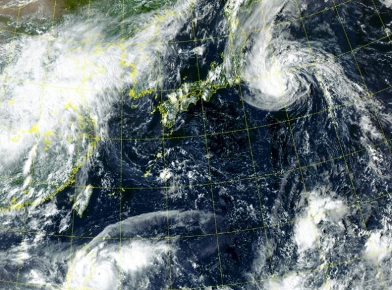

이번 주는 전국 대부분 지역에 비가 내리면서 줄곧 이어진 불볕더위가 한풀 꺾일 것으로 전망된다. 북상 중인 태풍은 한반도를 비껴갈 것으로 예상된다.
27일 기상청에 따르면 중국 산둥반도 부근에서 북한으로 북동진하는 저기압의 영향으로 28~30일 사흘간 전국 대부분 지역에 비가 내리겠다. 29일에는 돌풍과 천둥·번개를 동반한 시간당 30㎜ 내외의 많은 비가 내리는 곳이 있겠다.
이날부터 29일까지 예상 누적 강수량은 수도권과 강원 영서 중·북부, 충남 서해안·북부 내륙, 경북 북부 내륙, 경남 서부 30~80㎜, 강원 영서 남부·영동, 세종·대전·충남 남부 내륙, 충북, 부산·울산 20~60㎜, 제주 10~60㎜ 수준이다. 경기 북부와 서해 5도, 강원 영서 북부, 경남 서부 남해안·지리산 부근은 100㎜ 이상 비가 내리는 곳도 있겠다. 31일부터 다음달 1일까지 정체전선이 형성된 남부지방을 중심으로 비가 내릴 가능성이 있다. 강수의 영향으로 전국 곳곳에 내려졌던 폭염특보는 대부분 해제될 것으로 보인다. 북상 중인 제9호 태풍 ‘사올라’, 제10호 태풍 ‘담레이’가 한반도에 직접적인 영향을 줄 가능성은 작다.
 두번째 문서로 이동